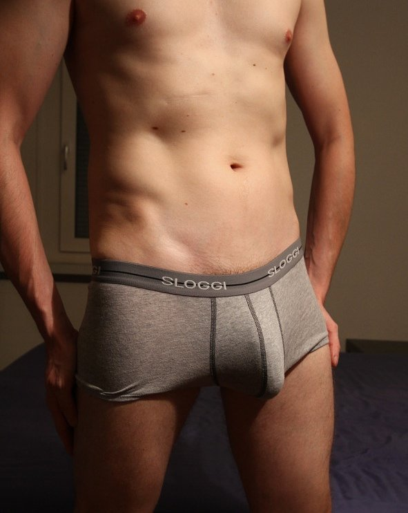

Hogyan növesztettem meg a péniszemet 3,5 cm-rel 5 nap alatt és javítottam a potenciámon
közzétéve: | szerző: Róbert

Helló mindenkinek. Bocs, hogy jó ideje nem írtam. Jó okom volt erre... Ma el akarok mesélni egy kis történetet arról, hogyan növesztettem meg a péniszemet 3,5 cm-rel 5 nap alatt! !. Egyből leszögezném, hogy a teljesen veszélytelen az egészségre nézve, ami ugyebár nagyon fontos. Csak ne nevessetek ki :)
Erre, a férfiasságomat növelő gélre kb teljesen véletlenül találtam rá. Amúgy az enyém teljesen átlagos méretű – 15 cm-es. Ez persze nem túl sok, de a csajok eddig nem panaszkodtak és én is jól megvoltam vele. Mégis úgy döntöttem, hogy kipróbálom, plusz 2-3 cm senkinek sem árthat, nemigaz? ;)
Szóval rendeltem egy ilyen gélet, és néhány napon belül meg is érkezett a csomagom. Miután kifizettem az árát (ami amúgy egyáltalán nem terhelte meg a pénztárcámat), reméltem hogy beteljesíti a hozzáfűzött reményeimet.
Ettől a naptól kezdve elkezdtem használni. Őszintén szólva először nem hittem a gél expressz hatásában, ahogyan az a honlapjukon volt írva . De 2 nap múlva rájöttem, hogy nem volt igazam...
Betartva a szakértők ajánlását, éreztem, hogy valami bennem változóban van. 5 nap használat után, elővettem egy vonalzót mondván, hátha nőtt legalább egy fél centit a drágaságom... Hozzátéve a vonalzót konkrétan megdermedtem... a péniszem 3,5 cm-rel hosszabb lett!! 5 nap alatt!! Majdhogynem ugrálni kezdtem örömömben...Örömöm határtalan volt, néhány napig egyszerűen nem találtam a helyemet!
Természetesen folytattam a gél használatát, és biztos vagyok benne, hogy ennél tovább is tud még nőni a drágám! Persze még egy előnye lett a gélnek: megnőtt a szeretkezéseim ideje is, és ahhoz hogy véget érjen addig tolom a csajt amíg neki nem elég :) Új, megnövesztett szerszámommal már 3 csajt meghódítottam, és azt kell mondjam, eddig még sosem kaptam ennyi bókot csajoktól a péniszemmel kapcsolatban ;) Már sajnálom, hogy megadtam nekik a telefonszámomat, folyamatosan hívogatnak, szeretnének újabb találkát, én pedig valami újat szeretnék.
Összességében, ahogy ti is értitek, még egyszer sem bántam meg hogy megvettem ezt a gélt. Főleg, hogy ilyen cuccra nem sajnálom a pénzt, az eredmény pedig stabilan fennáll, és biztos vagyok benne, hogy sehova sem fog eltűnni. Nem szokásom szemétre költeni a pénzem, de ez valóban király pénzbefektetés... Szóval mindenkinek csak ajánlani tudom, főleg azoknak akiknek nem túl nagy példány jutott a természettől, de azoknak sem árt az a plusz 2-3 cm akinek átlagos méretű. Higgyetek nekem, saját tapasztalatból beszélek ;)
Akit érdekel - itt rendeltem meg a , 2 mozijegy árával egyenlő értéken. Sok ez vagy kevés – döntsétek el ti magatok. Véleményem szerint ezt a szert 10-szer drágábban kellene árulni , ugyanis megéri az árát és 100%-osan visszatérül.
P.S. a csomagot feliratmentes zacskóba csomagolják, minden teljesen anonim ;)